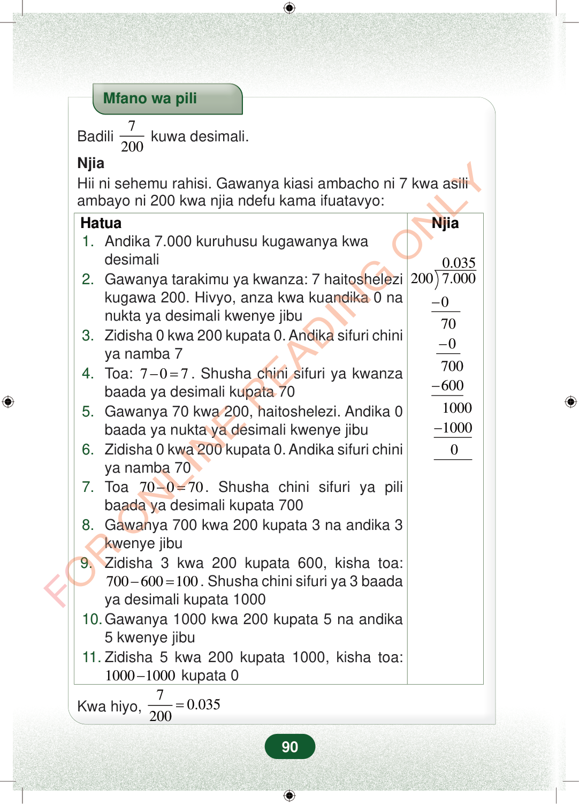

Mfano wa piliBadili7200kuwa desimali.NjiaHii ni sehemu rahisi. Gawanya kiasi ambacho ni 7 kwa asiliambayo ni 200 kwa njia ndefu kama ifuatavyo:HatuaNjia0.0352007.000−−−−07007006001000100001.Andika 7.000 kuruhusu kugawanya kwadesimali2.Gawanya tarakimu ya kwanza: 7 haitoshelezikugawa 200. Hivyo, anza kwa kuandika 0 nanukta ya desimali kwenye jibu3.Zidisha 0 kwa 200 kupata 0. Andika sifuri chiniya namba 74.Toa:707−=. Shusha chini sifuri ya kwanzabaada ya desimali kupata 705.Gawanya 70 kwa 200, haitoshelezi. Andika 0baada ya nukta ya desimali kwenye jibu6.Zidisha 0 kwa 200 kupata 0. Andika sifuri chiniya namba 707.Toa70070−=. Shusha chini sifuri ya pilibaada ya desimali kupata 7008.Gawanya 700 kwa 200 kupata 3 na andika 3kwenye jibu9.Zidisha 3 kwa 200 kupata 600, kisha toa:700600100−=. Shusha chini sifuri ya 3 baadaya desimali kupata 100010.Gawanya 1000 kwa 200 kupata 5 na andika5 kwenye jibu11.Zidisha 5 kwa 200 kupata 1000, kisha toa:10001000−kupata 0Kwa hiyo,70.035200=90
Mfano wa pili
Badili 7
200 kuwa desimali.
Njia Hii ni sehemu rahisi. Gawanya kiasi ambacho ni 7 kwa asili ambayo ni 200 kwa njia ndefu kama ifuatavyo:
Hatua
Njia
0.035 200 7.000
0 70 0 700 600 1000 1000 0
1. Andika 7.000 kuruhusu kugawanya kwa desimali 2. Gawanya tarakimu ya kwanza: 7 haitoshelezi kugawa 200. Hivyo, anza kwa kuandika 0 na nukta ya desimali kwenye jibu 3. Zidisha 0 kwa 200 kupata 0. Andika sifuri chini ya namba 7 4. Toa: 7 0 7 − = . Shusha chini sifuri ya kwanza baada ya desimali kupata 70 5. Gawanya 70 kwa 200, haitoshelezi. Andika 0 baada ya nukta ya desimali kwenye jibu 6. Zidisha 0 kwa 200 kupata 0. Andika sifuri chini ya namba 70 7. Toa 70 0 70 − = . Shusha chini sifuri ya pili baada ya desimali kupata 700 8. Gawanya 700 kwa 200 kupata 3 na andika 3 kwenye jibu 9. Zidisha 3 kwa 200 kupata 600, kisha toa: 700 600 100 − = . Shusha chini sifuri ya 3 baada ya desimali kupata 1000 10. Gawanya 1000 kwa 200 kupata 5 na andika 5 kwenye jibu 11. Zidisha 5 kwa 200 kupata 1000, kisha toa: 1000 1000 − kupata 0
Kwa hiyo, 7 0.035 200 =
90
Mfano wa pili unaonyesha kubadili sehemu 7 juu ya 200 kuwa desimali.Mfano wa piliBadili <math><mfrac><mn>7</mn><mn>200</mn></mfrac></math> kuwa desimali.NjiaHii ni sehemu rahisi.Gawanya kiasi ambacho ni 7 kwa asili ambayo ni 200 kwa njia ndefu kama ifuatavyo:Hatua1.Andika 7.000 kuruhusu kugawanya kwa desimali2.Gawanya tarakimu ya kwanza: 7 haitoshelezi kugawa 200.Hivyo, anza kwa kuandika 0 na nukta ya desimali kwenye jibu3.Zidisha 0 kwa 200 kupata 0.Andika sifuri chini ya namba 74.Toa: <math><mrow><mn>7</mn><mo>−</mo><mn>0</mn><mo>=</mo><mn>7</mn></mrow></math>.Shusha chini sifuri ya kwanza baada ya desimali kupata 705.Gawanya 70 kwa 200, haitoshelezi.Andika 0 baada ya nukta ya desimali kwenye jibu6.Zidisha 0 kwa 200 kupata 0.Andika sifuri chini ya namba 707.Toa <math><mrow><mn>70</mn><mo>−</mo><mn>0</mn><mo>=</mo><mn>70</mn></mrow></math>.Shusha chini sifuri ya pili baada ya desimali kupata 7008.Gawanya 700 kwa 200 kupata 3 na andika 3 kwenye jibu9.Zidisha 3 kwa 200 kupata 600, kisha toa: <math><mrow><mn>700</mn><mo>−</mo><mn>600</mn><mo>=</mo><mn>100</mn></mrow></math>.Shusha chini sifuri ya 3 baada ya desimali kupata 100010.Gawanya 1000 kwa 200 kupata 5 na andika 5 kwenye jibu11.Zidisha 5 kwa 200 kupata 1000, kisha toa: <math><mrow><mn>1000</mn><mo>−</mo><mn>1000</mn></mrow></math> kupata 0NjiaNjia ya mgawanyo mrefu inaonyesha 7.000 ikigawanywa kwa 200 na kupata 0.035.Kwa hiyo, <math><mrow><mfrac><mn>7</mn><mn>200</mn></mfrac><mo>=</mo><mn>0.035</mn></mrow></math>